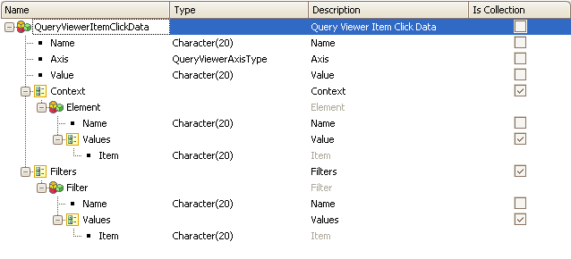

Upon clicking on the value of a Query Element, we may want to trigger a particular action (such as recalculating a value, changing the color of a text, interacting with another control, etc.). This property contains the name of the variable based on the QueryViewerItemClickData SDT that can be used in the ItemClick Event. Values
QueryViewerItemClickData SDT Structure Scope
See also
ItemClick Event
|
| Backlinks | ||
| Item Double Click Data property | ItemDoubleClick Event | QueryViewer control properties |